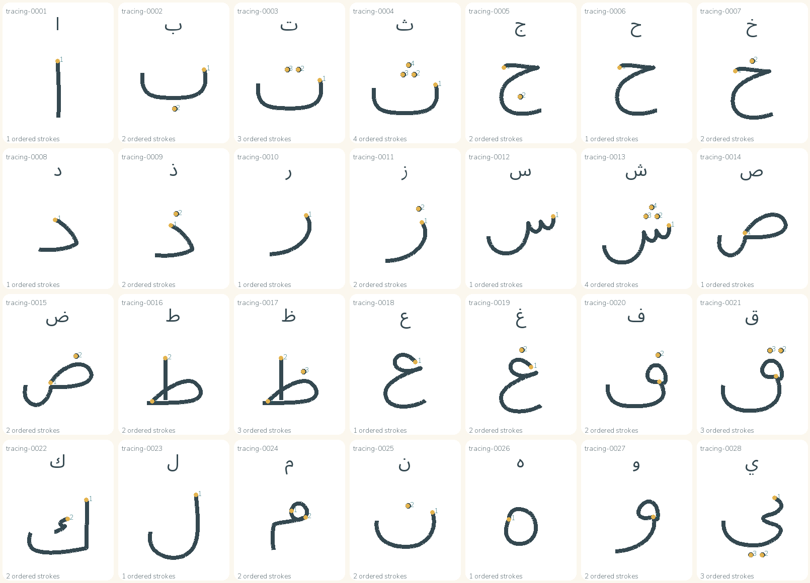
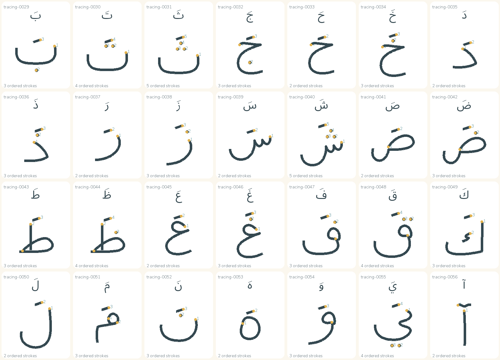
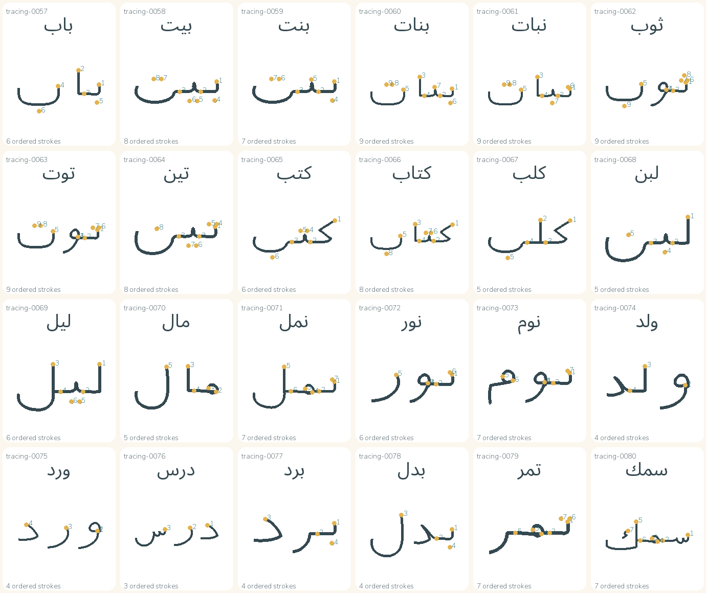

Arabic Trace & Write: all 80 corrected guides
The gold marks show ordered stroke starts. Letters keep their proportions inside words. The app uses the same geometry for its small model and practice board. This is a visual review packet; no audio autoplays.
28 isolated letters

27 short-vowel guides and long alif

24 word guides
